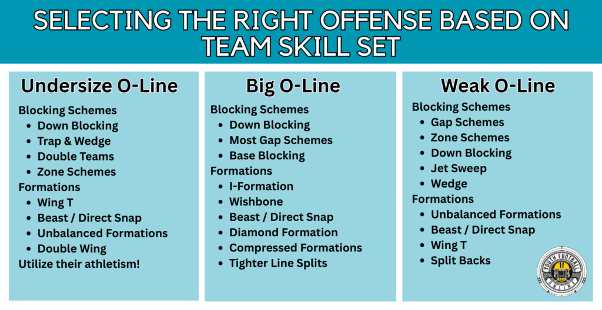

Blocking Schemes
 Youth Football Online has a great article on picking an offense to run for youth football coaches. Additionally, it does a great job of breaking down different offenses by age and grade. You can check it out on Youth Football Online.
This image from YFO is gold:
[Image Placeholder: YFO Offensive System Breakdown]
In my experience, on every team I've coached, the offensive line has always been a weak point and needs to be an area of focus.
Before a formation can be determined, a blocking scheme must be selected first. The following sections focus on what to run when your O-Line needs help.
Personal Tip: I keep my most athletic linemen at guard because they’ll be asked to pull.
Gap Scheme
The gap scheme is about moving bodies. It’s about physicality, double teams, and down blocks to open up a specific hole. You’re not blocking a man — you’re blocking an area or a gap.
Blocking Rule: GOD — Gap, On, Down
- GAP: If there’s a defender in your play side gap → block him.
- ON: Else, if there’s a defender directly on you (head up) → block him.
- DOWN: Else → block down to help your teammate on the next inside defender.
How to explain it:
"We use something called GOD blocking — it helps you figure out who to block. First, look in the gap inside of you. If someone’s there, boom — block him. No one? Block the guy right in front of you. Still no one? Turn and help your buddy by blocking the next guy down."
Key Coaching Points:
- Use the GOD rule before every play to identify your assignment.
- Block down on the defender in the gap inside of you.
- Backside guard or tackle pulls and leads through the hole.
Example Play: On Power Right, the left guard pulls and leads through the right-side hole (usually off-tackle), while everyone else blocks down inside.
Great For: Power, Counter
Special Rule for Beast Formation:
Beast Formation Blocking Rule: 👉 Down block across the board.
In Beast, we keep it simple and smash-mouth. Everyone blocks down to create a wall on the play side. No pulling, no reads — just wall off the defense and drive them inside while our ball carrier hammers the edge or hits the wedge.
Zone Scheme
Zone blocking is about teamwork and movement. Everyone steps the same way and blocks the first man that shows in their zone. We want to create running lanes by getting defenders moving sideways.
How to explain it to 9-year-olds:
"Pretend you’re in a marching band. All five of you step the same direction at the same time. If a defender shows up in your zone, you block him. If not, keep moving to the next level."
Key Coaching Points:
- Everyone steps in the same direction (inside or outside zone).
- Double teams at the line with plans to climb to linebackers.
- The running back reads the flow and chooses the best gap.
Example Play: Outside Zone Left – Everyone steps left, working to seal defenders to the inside or push them sideways. The RB finds the crease.
Down Blocking
Down blocking is a core part of the gap scheme. It’s what we often do when we get to the D in our GOD rule. Each lineman blocks the defender lined up inside of them — usually at an angle. It’s about sealing the inside so we can run off tackle.
How to explain it to 9-year-olds:
"If there’s no one in the gap or right in front of you, then look down inside and help your teammate. You’re going to block at an angle and push your guy back or across the field. This helps us run outside where the hole is."
Key Coaching Points:
- Step inside at an angle with a strong base.
- Get your head across and drive through the defender.
- Work together — your block might help two teammates.
Great For: Power, Counter, Trap — anything where you want to wall off the defense.
Jet Sweep
The Jet Sweep gets your speed on the edge fast. Timing is key. The line’s job is to reach and seal defenders to the inside while the runner flies across the formation.
How to explain it to 9-year-olds:
"Our fast guy is going to run sideways behind the QB and take the ball in full sprint. You linemen need to be quick, step sideways, and keep the defenders from chasing him down."
Blocking Tips for the O-Line:
- Front side: Reach block — get outside the defender and turn him in.
- Back side: Cut off pursuit — don’t let defenders chase the play from behind.
- Playside guard and tackle are the most important — they’ve got to move their feet!
- Add a WR crack block from the outside to help seal the edge and spring a big play.